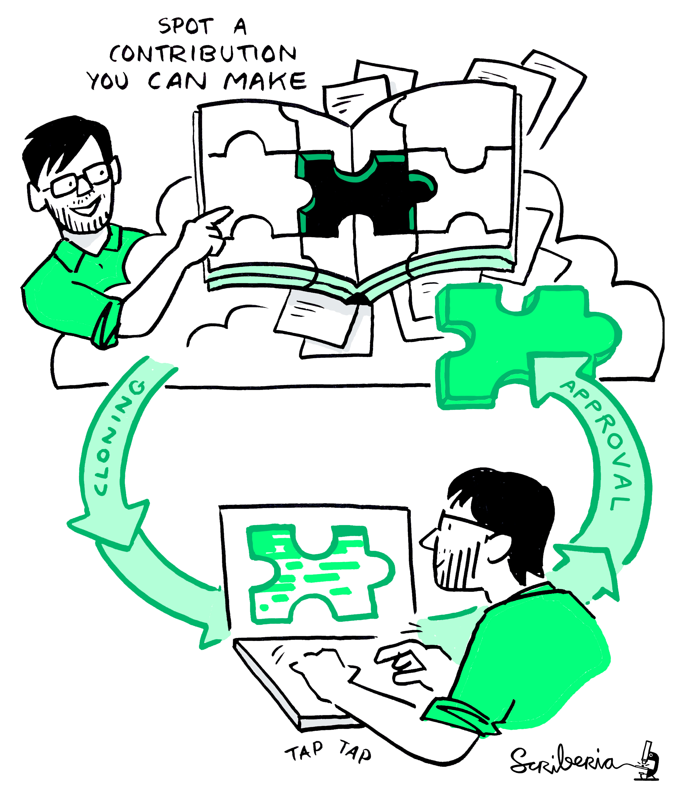

Users of JupyterHub
@ JupyterCon 2025

Housekeeping
- This workshop follows the JupyterCon Code of Conduct
- The shared notes document is annuel.framapad.org/p/jupyterhub-users-jc-nov-2025-ahog
- Please sign in on the document
- We'll have a break midway through this session, but please take breaks as you need them!
Agenda
| Time | Activity |
|---|---|
| 00:00 - 00:20 | Scene Setting |
| 00:20 - 01:00 | Group Connections |
| 01:00 - 02:15 | Group Discussions & Shareouts |
| 02:15 - 02:30 | Break |
| 02:30 - 03:20 | Contributing to JupyerHub as user | 03:20 - 03:30 | Wrap up & next steps |
A quick hello from the facilitators... 👋
Workshop Motivation ✨
JupyterHub administrators & deployers know a lot about deploying JupyterHub in different settings...
...but there hasn't always been a clear pathway to feed this knowledge and insight back to the project team
This workshop is part of an experiment to connect the project community & deployers on a regular cadence
Workshop Motivation ✨
We want to provide spaces for administrators and deployers across the community to get to know each other...
...& explore possible pathways for them to directly contribute their expertise back to JupyterHub
Workshop Motivation ✨
This workshop was inspired by the recommendations from the "Voices of JupyterHub" report, part of CZI EOSS grant
Read more at voicesofjupyterhub.orgmycology.com
Or come to the talk on Wednesday morning (11:35am, Royal Room) ☀️
Group Connections 💬(40 mins)
- Spend 3-5 mins introducing yourself
- Name and organisation
- Choice of two ice breaker topics (or pick your own!):
- What assumption about running JupyterHub did you make, that turned out to be completely wrong?
- What session are you most looking forward to at JupyterCon?
- If we're a larger group we'll split up into groups to do this & rotate after 20 mins or so
Breakout disussions 👥(45 mins)
Pick up to 3 of the following questions to discuss
Add notes to the shared notes document as you chat
Pick someone to report back to the main group
If we're a smaller group, we'll go through the questions all together
Discussion questions 👥
If you could go back and give yourself one piece of advice before your first deployment, what would it be?
What's the most surprising infrastructure or operational challenge you've faced with JupyterHub?
What are some of the common challenges you see with other deployments? How could these be tackled upstream or collectively?
If you could add one feature to JupyterHub tomorrow, what would make your life easier?
What are some of the security or compliance requirements that significantly shaped your implementation?
How do you learn about JupyterHub updates? How well does this fit with your organisations operations and needs?
Share Out (30 mins)
☕BREAK!

Contributing to JupyterHub
Contributing to JupyterHub: Brainstorming 🧠
How would you describe your relationship with the JupyterHub project and community?
How do you collect feedback from your users? How do they, or you, pass on this feedback to the project? How could this process be smoother?
What would motivate you to become more involved with JupyterHub development or community? What are the practical steps the community could take to support that journey?
If we're a large group, we'll split up into groups again
JupyterHub Deployment Case Studies 🔎
JupyterHub documentation currently lists JupyterHub deployments
But we'd like to share more about these!
Both to celebrate all the hard work which goes into running different types of deployment... 🎉
...& to inspire and support future deployers of JupyterHub 💡
JupyterHub Deployment Case Studies 🔎
Check out the headings in the "Case Study Template" section of the shared notes
Are there any aspects missing you'd like to see included?
Would you or your team be willing to complete one on your deployments?
Telling the story of JupyterHub:
Findings from the Voices of JupyterHub project
Wednesday November 5, 2025, 11:35am PST
Royal Room
What's next?
Check out the links on the next slide 🔗
Keep an eye out for blog posts covering this event soon!
Fill out this form to share feedback & stay in touch https://forms.gle/gxYHkyaBbHEGpZXm6
Contributing to JupyterHub
jupyterhub.readthedocs.iojupyterhub.readthedocs.io
discourse.jupyter.org/c/jupyterhub
jupyter.zulip.chat/jupyterhub
compass.hub.juptyer.org